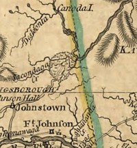

|
The Sacandaga Patent
by
We hear that "Sacandaga" is an "Indian" word meaning "drowned lands." Today, the term most often identifies a large but man-made lake situated north of the city of Amsterdam and in the southern Adirondacks. During the eighteenth century, it identified the Sacandaga River which ran through what became the "Sacandaga Patent" on its way east into the upper Hudson River. The initial partition of the Sacandaga "valley" by the province of New York is related to the real estate ambitions of a number of early Albany people. On November 4, 1741, the petition to the royal governor's council of Leendert Gansevort, Henry Holland, Corns. Ten Broeck, Jacob Wendell, Abr'm H. Wendell, Johannes H. Wendell, Johs. Hun, Abr'm Dow, Peter Winne, Garrit Corns. van den Bergh, Dow Fonda, John Lindesay, Anna widow of Johs. Everts Wendell, and Edw'd Holland was granted. The patent comprised 28,000 acres and was located in the Fulton and Hamilton County towns of Johnstown, Mayfield, Broadalbin, and Perth. Perhaps the first survey/map was drawn by Edward Collins in 1740. Numbered lots located with these lands remained in the families of some of the Albany patentees for many years. The "single woman" Geesie Wendell (daughter of an original patentee who bequeathed her share to family members in 1783) was one of them. Until the 1930s, late winter runoff created flood conditions in the upper Hudson Valley. After construction of the Conklingville Dam (closed in March 1930) created the Sacandaga Reservoir, the almost annual overflow and flooding along the Albany waterfront was mostly alleviated while not completely controlled. This exposition helps articulate the holdings of a number of early Albany people. For the patent itself, see "Land Papers," volume 13:94. An undated map of the Sacandaga Patent is held in the Abraham Van Vechten Papers at the New York State Library. Later maps are derivative of the Collins drawing. Additional maps are in collections. More maps in official NYS repositories. Detail showing the location of the patent north of the Mohawk. Reproduced from A Map of the Province of New York" by Claude Joseph Sauthier dated 1776. opened: 12/10/09 |